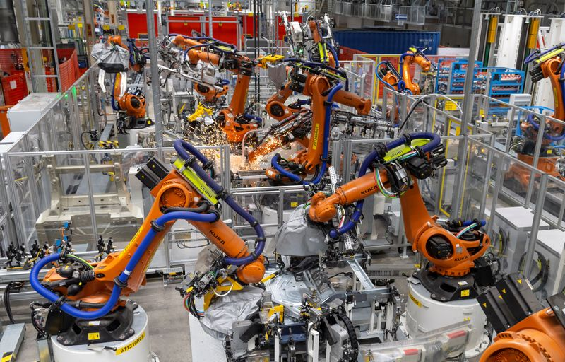

Business among German carmakers picks up speed in March: Ifo
BERLIN (Reuters) – Germany’s car industry picked up speed in March, a survey published by the Ifo economic institute showed on Tuesday, although automotive executives also become less optimistic about the outlook for the coming months.
The survey’s indicator for the current business situation rose to 7.9 points in March from -0.4 in February, as carmakers filled up their order books and ramped up production.
'Spring has arrived for carmakers,' said Ifo’s Klaus Wohlrabe.
But the survey’s indicator for business expectations fell to 19.1 points from 37.3 in February, suggesting managers in the industry are gloomier about its prospects for the coming months.
(Reporting by Caroline Copley, editing by Kirsti Knolle)
Posted On: 2021-04-06T00:00:00

Content Date: 2021-04-06
Download Date: 2021-04-17
Document ID: L0C04A7JR